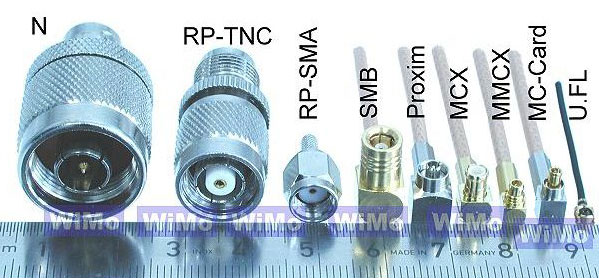

CABLES Y CONECTORES DE ANTENAS
Cuando se termina una antena y se prueba hay veces que no cumple con las expectativas que nos habíamos puesto, y en la mayoría de las veces la culpa es del cable que hemos elegido para esa antena, por eso vamos a conocer en esta sección los cables para antenas.
Las características de los cables coaxiales que se usan para antenas se miden por 5 factores fundamentales para nosotros.
1º - El diámetro del cable, se mide en milímetros y es el grosor que tiene el cable, y dependiendo del diámetro del cable nos influye para seleccionar el tipo de conector que debemos poner en sus extremos.

2º - La frecuencia de trabajo se mide en MHz, los cables están diseñados para trabajar en un rango de frecuencia determinado, ya que las antenas para wifi trabajan en 2,4 GHz el cable que escojamos debe poder trabajar a 2.400MHz sino debemos rechazarlo al no ser valido para wifi, en la siguiente ejemplo podemos ver que a mayor frecuencia de trabajo mayor será la perdida de señal.
Perdidas de señal del cable LMR-400 según la frecuencia de trabajo
Frecuencia |
Perdida decibelios por metro |
30 MHz |
0.022 |
50 MHz |
0.029 |
150 MHz |
0.050 |
220 MHz |
0.061 |
450 MHz |
0.089 |
900 MHz |
0.128 |
1500 MHz |
0.168 |
1800 MHz |
0.186 |
2000 MHz |
0.196 |
2400 MHz |
0.217 |
2500 MHz |
0.222 |
5800 MHz |
0.355 |
3º - La impedancia del cable, se mide en ohmios Ω, normalmente suelen tener 50 ó 75 Ω pero también los hay hasta de 93 Ω, los de 75 Ω se emplean en antenas de televisión, para las antenas wifi se utilizan solo y exclusivamente de 50 Ω. Si colocamos un cable de otra impedancia, parte de la señal de radio se reflejara hacia el adaptador wifi y trabajara mal incluso se puede estropear, ya que puede llegar a quemar el transistor de salida de la etapa final. Si no tenemos conocimiento de la impedancia de un cable debemos rechazarlo.
4º
- Los decibelios de los cables, es una característica que nos dice la perdida
de señal que hay por cada metro de cable. Esto es muy importante porque por
ejemplo si hacemos ó compramos una antena que nos da una ganancia de 14 decibelios y la
conectamos con un cable de
Tabla de pérdidas de señal de los cables
Tipo de cable |
Perdida 802.11b/g (2.4GHz) dB/1m |
LMR-100 |
1.3 dB por metro |
LMR-195 |
0.62 dB por metro |
LMR-200 |
0.542 dB por metro |
LMR-240 |
0.415 dB por metro |
LMR-300 |
0.34 dB por metro |
LMR-400 |
0.217 dB por metro |
LMR-500 |
0.18 dB por metro |
LMR-600 |
0.142 dB por metro |
LMR-900 |
0.096 dB por metro |
LMR-1200 |
0.073 dB por metro |
LMR-1700 |
0.055 dB por metro |
RG-58 |
1.056 dB por metro |
RG-8X |
0.758 dB por metro |
RG-213/214 |
0.499dB por metro |
9913 |
0.253 dB por metro |
3/8" LDF |
0.194 dB por metro |
1/2" LDF |
0.128 dB por metro |
7/8" LDF |
0.075 dB por metro |
1 1/4" LDF |
0.056 dB por metro |
1 5/" LDF |
0.046 dB por metro |
5º - El precio del cable depende de su calidad y de su diametro. Puede variar de 0,5 Euros el metro de cable para los peores, tipo LMR-100 y RG-58 hasta los 60 Euros el metro para los mejores tipo LMR-1700 1 5/” LDF, pero estos son muy difíciles de conseguir ya que por sus caracteristicas y su precio solo se usan para frecuencias y aplicaciones especiales.